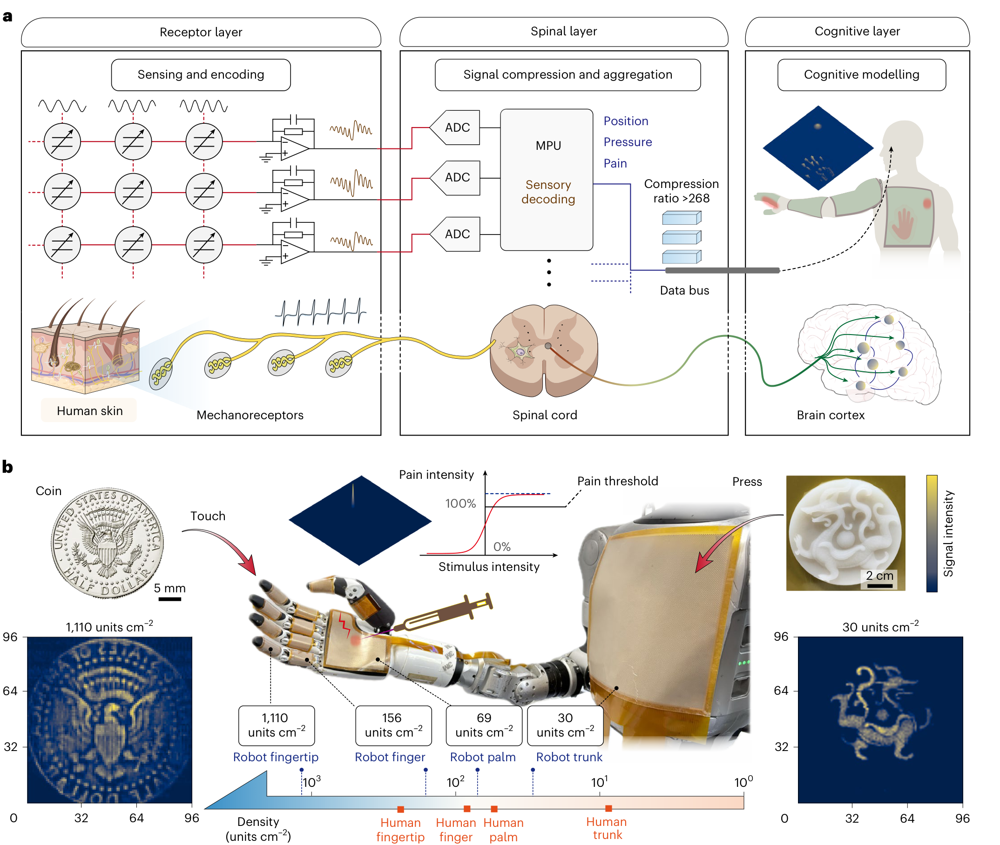
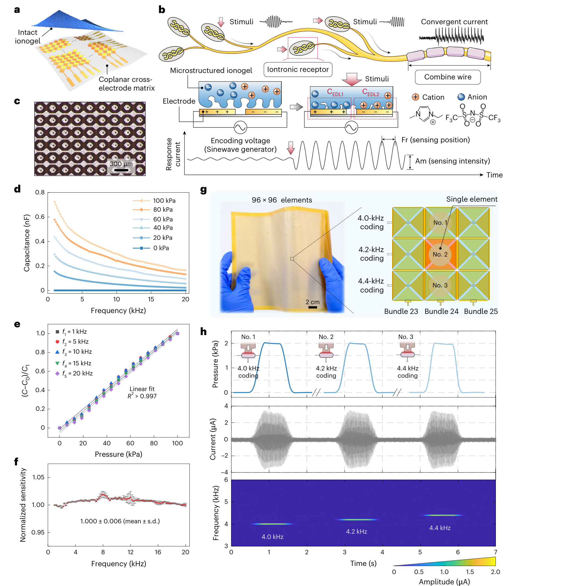
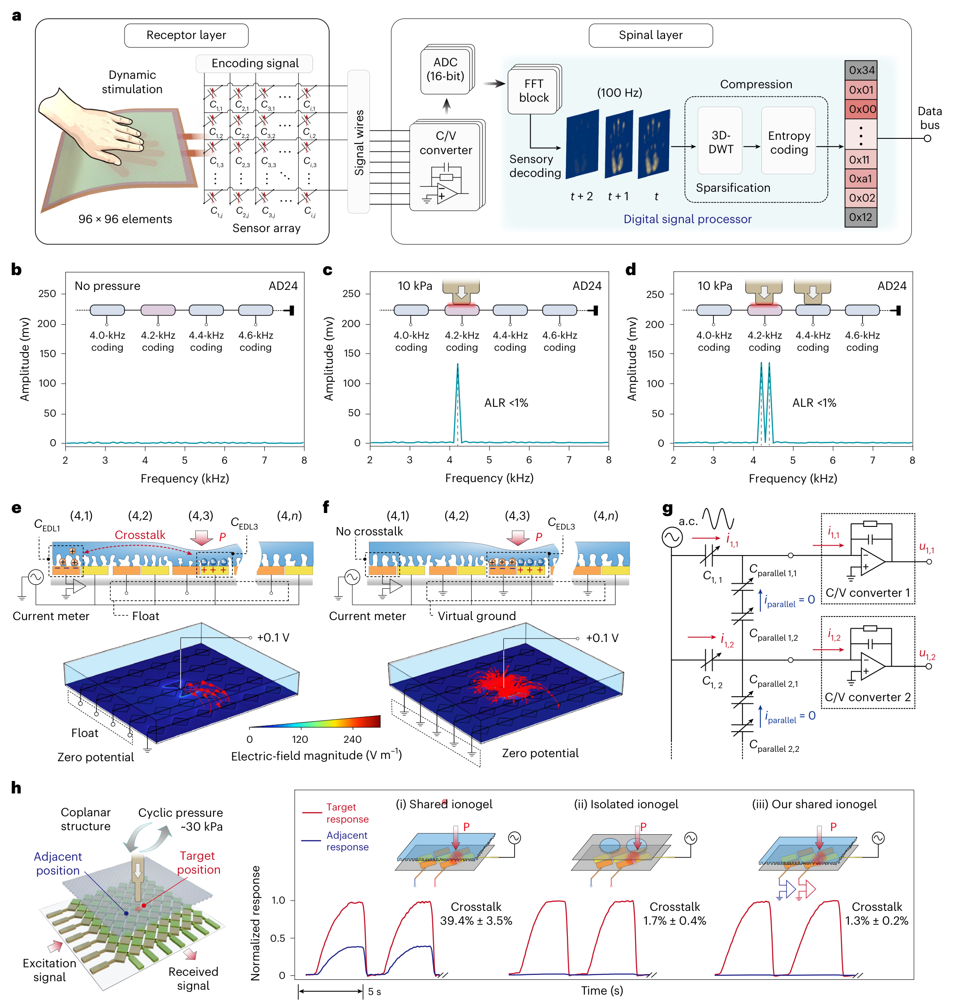
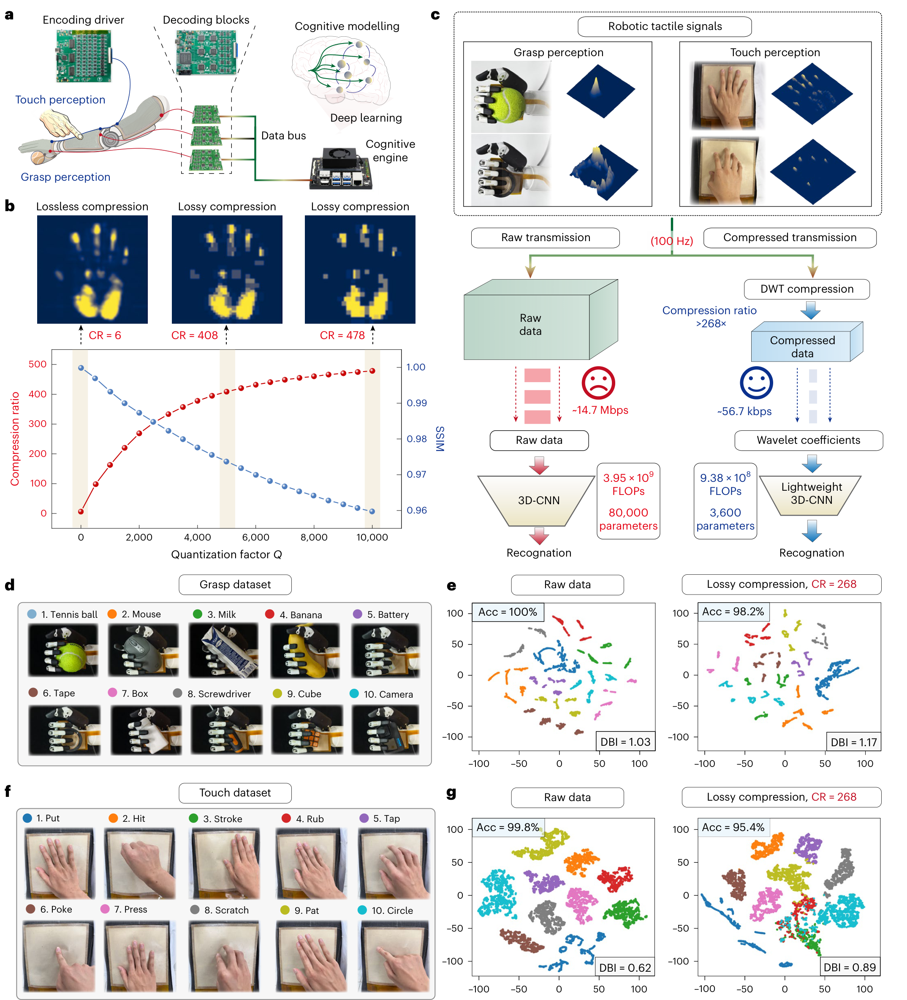
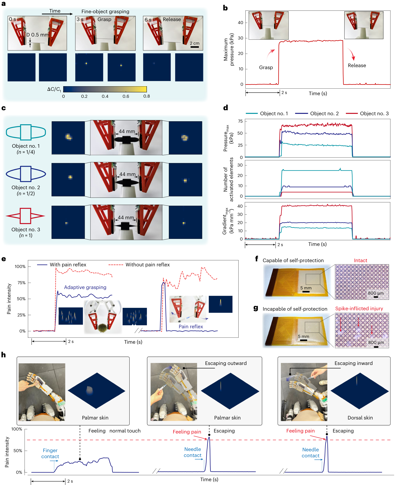
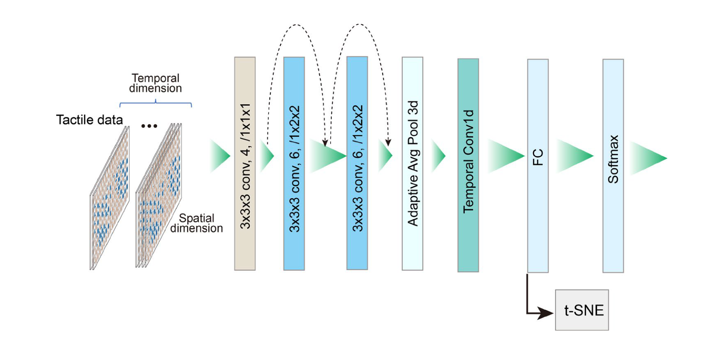
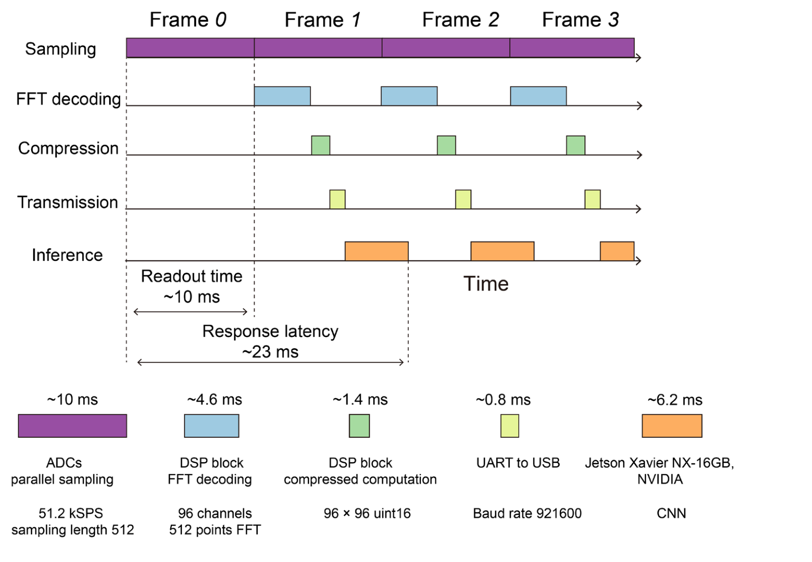
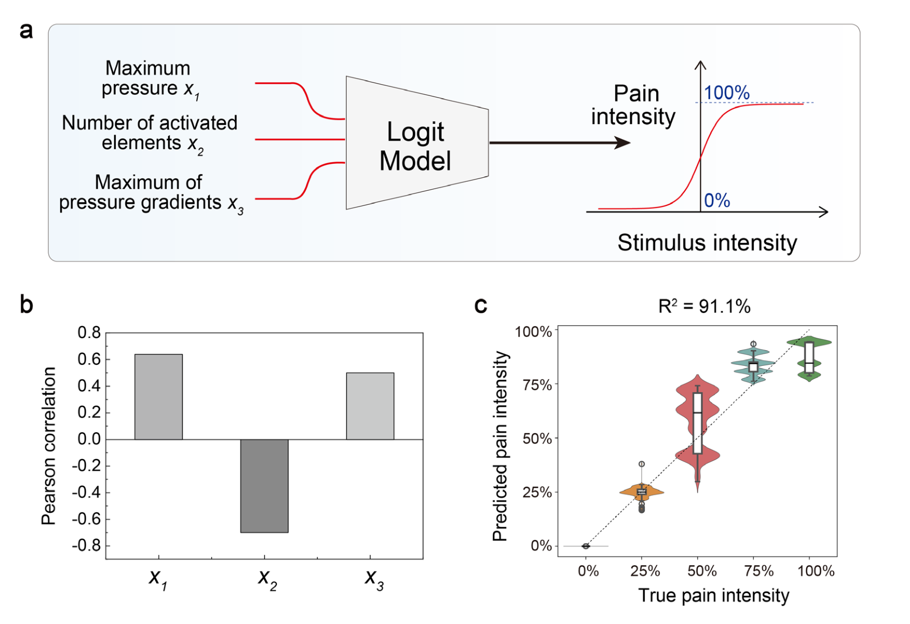

阅读依据：已核验的 16 页出版社排版待出版稿（首页日期为占位符）、41 页官方补充材料，以及作者公开代码的固定版本。正文包含 12 页主文、1 页扩展数据表和3页 Reporting Summary。本页详讲全部 5 张主图，并补读 3 张关键补图；未复现训练、未逐段核验补充视频。发表日期依据出版社页面。原始 PDF 保留在本地。
这篇论文的核心价值是联合解决三个扩展瓶颈：高密度器件的制造与串扰、数千通道的读出时间、触觉数据的传输与计算。其最清楚的证据链从传感器和电路出发，最终连接到受控机器人任务。
传感原理共享微结构离子凝胶＋同面电极；受压接触变化改变电双层电容。
信号架构每通道 96 个频率位置，并行 ADC／FFT、PZP 抑制串扰，再压缩传输。
为什么值得读展示如何把材料、模拟电路和任务模型一起设计，同时暴露数据划分与工程集成的边界。
300 μm最高密度配置的单元间距；1,110 单元/cm²
100 Hz每帧采样读出 10 ms；处理链另报约 23 ms
39.4% → 1.3%图 3h 特定加载条件下的空间串扰对照
CR ≈ 268图 4 的压缩工作点；物体 98.2%、手势 95.4%，须结合评估协议
先把信号链讲清楚
从一个接触点，到一张触觉图，再到一个动作
压力 P→电双层电容 C(P,f)→频率标记的交流电流→模拟汇流与 ADC→FFT 幅值与逐点标定→压力图 P(x,y,t)
在一个接收通道中，多个位置同时产生不同频率的电流；ADC 看见的是它们相加后的波形。FFT 把它拆成多个频点的幅值，由通道编号与频点确定二维位置，再按电路响应和传感标定换算压力。
理想交流电容关系：Iᵢ = jωᵢCᵢVᵢ，ωᵢ=2πfᵢ。
读出幅值除了受压力影响，还受激励频率、激励幅度以及反馈电阻／电容的传递函数影响。
补充说明 1 给出频率相关的反算式；它不是简单把 FFT 幅值直接写成 kPa。补图 8 还采用逐单元校准。这里的驱动需要外部电源，没有“按压自供电”的证据。
为什么可以用 96 个频点？采样率 51,200 点/s、窗口 512 点，采样时间是 10 ms，所以 FFT 频率格宽为 100 Hz。选用 1.0、1.2、…、20.0 kHz，共 96 个位置标记，相邻标记间隔 200 Hz，即两个频率格。同步、整周期的频率设计帮助降低泄漏；它并不取消多路前端与 ADC 的硬件开销。
需要传输与识别时
二维压力图沿时间堆叠 → 两级 bior1.3 小波变换 → 系数量化 → zlib 熵编码 → 传输 → 解码、反量化和重建 → 轻量 CNN 分类。
需要保护反馈时
最大压力＋激活面积的单元计数＋最大空间梯度 → Logit 危险接触评分 → 与任务阈值比较 → 减小抓力或撤回。具体原型由中央处理器与机器人控制接口联动。
作者将压缩环节称为 compressed sensing，但已展示的操作是先采集、FFT 解码，再对完整触觉数据做有损小波压缩；不能由此推断采用了低于奈奎斯特速率的随机压缩采样。
避免把不同样机的最佳数字拼在一起
四种皮肤配置，承担不同任务
| 任务／部位 | 阵列 | 密度 | 该配置支持的结论 |
|---|
| 高密度指尖纹理 | 96×96＝9,216 | 1,110 单元/cm² | 最小间距 300 μm；精细纹理映射。 |
| 机械手抓物 | 48×48＝2,304 | 69 单元/cm² | 十类物体抓握触觉数据与分类。 |
| 躯干大面积交互 | 96×96＝9,216 | 30 单元/cm² | 十类触摸动作与大面积接触分布。 |
| 软指细物／保护 | 24×24＝576（每片） | 156 单元/cm² | 间距及双点阈值约 0.8 mm；细物夹持、尖物保护。 |
配置来自 Methods 的 Demonstration setup 和补图 34。论文“>10,000”是系统级规模陈述；单片 96×96 为 9,216。正文在疼痛段又使用 300 μm 的双点阈值措辞，但软指实验的补图 34 明确给出 0.8 mm，应按具体样机区分。
FIG. 1
先看整体：皮肤、读出电路和认知模型怎样分工
作者要解决的是规模问题：传感单元增多以后，逐点扫描、串扰和数据传输会同时成为瓶颈。因此这篇论文的贡献横跨器件、电路与算法。

这是一套把压力传感、并行读出和触觉任务处理一起设计的分层系统。
来源：正文 Fig. 1，PDF 第 3 页。保留子图、坐标、图例与标尺；原图下的长图注已移入中文导读。
FIG. 2
压力改变电容，频率标记位置，幅度承载强度
先把传感和编码分开理解：离子凝胶负责把机械接触变成电容变化；驱动与读出电路负责给每个位置加上可分离的频率标记。

每个触觉点用电容变化表示受压程度，再借外加频率给自己的电流贴上位置标记。
来源：正文 Fig. 2，PDF 第 4 页；补充说明 1、补图 5、8、14。保留子图、坐标、图例与标尺；原图下的长图注已移入中文导读。
FIG. 3
FFT 负责分频，虚地电路负责抑制物理串扰
必须区分两类混淆：一个频率的能量泄漏到相邻频率，和一个位置受压却让邻近电极产生响应。论文分别用频率设计和并行零电位方案处理。

频率编码解决“信号如何分开”，零电位前端解决“相邻位置为何互相影响”。
来源：正文 Fig. 3，PDF 第 6 页；方法、补图 15–21、24。保留子图、坐标、图例与标尺；原图下的长图注已移入中文导读。
FIG. 4
压缩触觉数据后，还能保留多少任务信息？
图 4 的主线是信息取舍：传感器能输出很多数据，但识别任务未必需要全部细节。作者用有损压缩与较小的分类模型，换取较低的传输和推理开销。

触觉信息可以强压缩后再分类，但手势更容易损失关键时间特征，精度与泛化条件必须一起报告。
来源：正文 Fig. 4，PDF 第 7 页；方法、补图 24–33；公开代码只读核对。保留子图、坐标、图例与标尺；原图下的长图注已移入中文导读。
图 4 的评估条件 · 论文与代码交叉核对
高准确率证明了什么，还没有证明什么
Reporting Summary 给出的独立采集规模是：十类物体，每类四次抓取（共 40 次）；十类手势，四名参与者（报告 N=40）；疼痛数据五个等级，每级五次。100 Hz 产生的很多帧并不等于同样多的独立试验。
| 核对项 | 公开代码／补充材料中的做法 | 解读边界 |
|---|
| 物体分类 | 数据加载默认每个样本 1 帧；汇总各抓取文件后，以 random_split 做 70%／30% 划分。 | 同一次抓取中的相邻帧可能分到两侧，时间相关性会使验证更容易；不能据此认定完成留一抓取或留一物体实例测试。 |
| 手势分类 | 默认窗口 30 帧，逐帧滑动（步长 1）；生成窗口后做 70%／30% 随机划分。 | 相邻窗口共享 29/30 帧，有跨集合高度重叠风险。代码未按参与者或完整采集回合分组，95.4% 不是直接的跨人泛化证据。 |
| 疼痛回归 | 逐帧提取三项特征，再随机划分 80%／20%。 | 同一加载记录的帧可能跨集合；R²=0.911 不能直接推广到新材料、未知尖物或全新加载条件。 |
| 未见物体 | 补图 32 加入软玩具、钢球后，以 linear probing／微调协议扩展类别，总体准确率 89.9%。 | 这是经任务适配后的迁移，不是完全不训练的零样本识别。 |
| 多点／多物体 | 补图 33 仍用适配协议；precision=0.814、recall=0.683、F1=0.721。 | 多接触能力有演示，但表现低于受控单物体分类，不能沿用单物体 98.2%。 |
证据范围：以上代码检查固定在 作者仓库版本 351ee0bddfb8，只读核对，未运行训练或复现准确率，也未证明该版本与论文每个图点的最终运行配置完全相同。它足以要求谨慎解释泛化，尚不足以定量断言论文准确率被抬高了多少。
还需补证：按完整采集回合分组、留一参与者、留一物体实例，且先划分原始记录再切窗；随后重新比较原始数据与 CR=268 的精度。如果压缩优势在这些协议下仍成立，算法部分的实用性证据会更强。
FIG. 5
从触觉图到动作：细物抓取与接触保护
这一图把传感器放回机器人任务：先证明能读到细小接触，再用接触集中程度估计危险，最后比较有无保护反馈的后果。

皮肤提供接触压力与集中程度，控制器据此减力或撤回；“疼痛”在这里是保护策略的中间变量。
来源：正文 Fig. 5，PDF 第 8 页；方法、补充说明 2–3、补图 34–36。保留子图、坐标、图例与标尺；原图下的长图注已移入中文导读。
以下三张补图分别回答：模型究竟看什么、23 ms 如何计算、疼痛标签是什么。其他补图覆盖制造、标定、耐久、功耗、串扰扩展及迁移评估；本页在相关段落引用，未逐张展示。
SUPP. 26
分类器看的是重建后的触觉帧序列
这张补图补足图 4 的算法细节。3D 中的第三维是时间，前两维是皮肤平面位置，并非一幅三维物体体积图。

算法学习的是压力分布及其时间变化；压缩、重建、分类是可区分的三个过程。
来源：补图 26，SI PDF 第 31 页；Methods；作者公开模型与数据加载代码。保留子图、坐标、图例与标尺；原图下的长图注已移入中文导读。
SUPP. 31
100 Hz 的帧率与约 23 ms 的处理延迟可以同时成立
流水线中，后一帧可以在前一帧仍在处理时开始采样。输出更新频率和一帧经过所有环节的时间，衡量的是不同事情。

100 Hz 说更新有多密，23 ms 说一帧处理有多快，两者都不是完整机器人动作耗时。
来源：补图 31，SI PDF 第 36 页；补图 30；Methods。保留子图、坐标、图例与标尺；原图下的长图注已移入中文导读。
SUPP. 36
“疼痛真值”来自尖锐度标签，91.1% 是 R²
这是理解图 5 最重要的补充：作者用尖锐程度构造一个 0–100% 的工程评分，再拟合压力图特征到该评分的映射。

它把尖锐接触的压力特征压成一个保护评分，再用阈值触发反馈。
来源：补图 35–36、补充说明 3；正文 Methods；公开 Pain_model 代码。保留子图、坐标、图例与标尺；原图下的长图注已移入中文导读。
证据强度
最扎实的是哪一部分？
器件与电路：电容—压力标定、频率位置编码、两点同时加载和三组串扰对照组成清晰的实测链。PZP 在保留共享离子凝胶结构的同时把邻位响应压低，是核心硬件贡献。
任务演示：细物夹持、反馈调力和有无针刺保护的实物对照有说服力；它们证明原型可完成这些受控任务。
认知推广：压缩后的分类结果值得关注，但数据划分、独立测试规模和适配协议限制了结论强度。
工程边界
读出系统还没有变成一层皮肤
作者在 Discussion 明确指出编码—解码电路体积较大，提出未来 ASIC 集成。现有系统包含激励驱动、模拟前端、ADC、FPGA、通信及中央计算，不能只按小于 600 μm 的传感片厚度估算整机尺寸和负担。
补图 19 报告 96×96 读出系统平均功耗约 3.59 W。这不包含整台机器人的所有执行与计算功耗。其图中“5,000 mAh、5 V、11.83 h”与 3.59 W 的简单能量预算不一致（25 Wh÷3.59 W≈7 h），电池能量口径和续航测试需进一步澄清。
从传感到控制
不要把检测精度等同于闭环性能
“0.2 mm 焊锡丝操作”在正文中有描述并指向视频；本次未逐段核验视频，仅按作者文字记录。0.5 mm 铅笔芯的主图已查看。两者都不能单凭物体直径推出同等数值的双点空间分辨率。
尚需更系统的抓取成功率、保护触发误报／漏报、不同材料损伤阈值、控制稳定性和长期机械磨损评估。23 ms 的计算链延迟也不等于执行机构撤回完成时间。
对柔性传感与飞行研究的启发
可迁移的是架构方法
值得借鉴的是：先定义每个传感位置如何可分辨地编码，再联合选择频带、采样窗口、读出速率和串扰抑制；随后按任务需求压缩数据，并把保护反馈与复杂识别的职责讲清楚。
这篇论文测的是接触压力分布，未证明翼面应变、三维翼形或飞行扰动估计。若用于扑翼平台，还需验证非接触变形可观测性、动态惯性影响、质量／功耗／布线负担及机载闭环表现。
术语与易混淆项
读图时可随时回查
电双层 EDL
电极电子与凝胶离子在界面两侧积聚，形成很薄的电荷分离层；接触变化带来明显电容变化。
频率编码
以外加交流频率标记位置，以幅度反映受压响应；二维地址还包括接收通道编号。
虚地／PZP
通过反馈使接收节点近似保持相同零电位，降低相邻路径的驱动电压差。
ALR 与空间串扰
前者是频谱能量泄漏到相邻频点；后者是邻位单元跟随目标受压产生响应。两种百分比不能互换。
3D-DWT
对两个空间维与时间维做离散小波变换；再量化和熵编码实现数据压缩。
CR、SSIM、DBI
CR 为原始／压缩大小比，越大越省数据；SSIM 越接近 1 越相似；DBI 越低通常表示特征簇更紧密、分离更好。
Logit 保护评分
三个压力分布特征的线性组合，经 sigmoid 映射到 0–1；输出含义取决于训练标签。
帧率与延迟
100 Hz 是每秒更新次数；约 23 ms 是所示一帧处理链耗时；时序上下文和机械动作另计。
分辨率与检出
检测到一个细物与分开两个相邻接触点是不同能力；阵列间距也不自动等于整套系统的有效分辨率。
返回书架
引用
原始论文
Li, Z., Da, B., Shi, J., Wang, T., Si, W., Li, B., He, H., Liao, Z., Wu, T., Han, X., Bai, L., Kong, H., Song, C. & Guo, C. F. Large-scale iontronic skins with neural-hierarchical processing architecture. Nature Machine Intelligence (2026), published online 16 October 2026. https://doi.org/10.1038/s42256-026-01325-6. 卷期及最终页码在本次核验的引用信息中未给出。